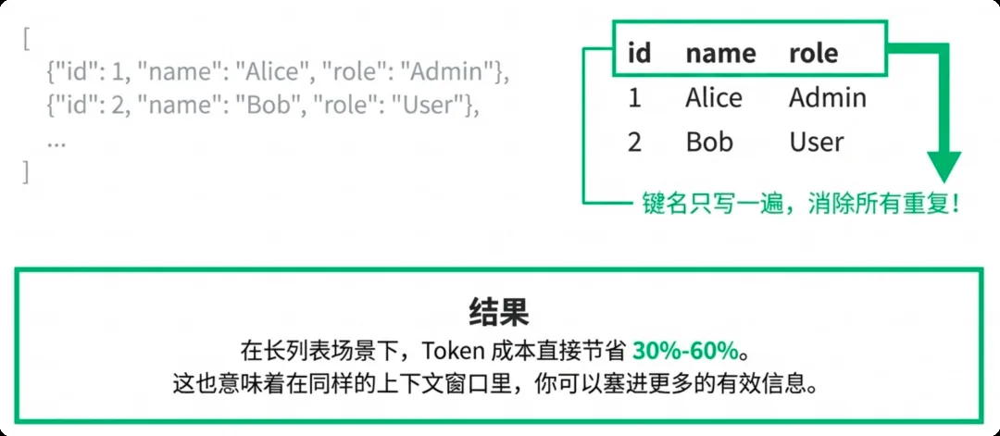

Syntax Layer: Prompts Are Written for Machines
First of the four hands-on layers. Early products often keep ###, bold **, and pretty JSON—either for debugging or because an AI drafted the prompt. Layout that feels friendly to humans is “lexical tax” in an LLM's billing logic.
The author built a Token visualization tool (yusuan.ai/analyzer) and dropped in a slim Lyra prompt: bold ** alone ate 8.5% of Tokens. Add list markers, heading symbols, JSON indentation and newlines, and 13% of that prompt is formatting. In typical product Prompts, 10%–20% is this kind of decorative Token.


Feed the model 50 user records and compare three formats. A JSON array that repeats field names 50 times is the RAG disaster zone.
1. Complex objects: YAML (or TOON), not JSON. JSON's signal-to-noise is awful: every key wrapped in quotes, every nesting level closed with braces—and those symbols often bill as their own Tokens. YAML uses indentation instead of closers and a colon instead of “quotes+colon,” usually saving 10%–15%, sometimes up to 40%. TOON is a new format built to save Tokens, but LLMs may not support it well yet—so the steadier combo is YAML + CSV.
2. Flat lists: CSV, not JSON arrays. A headered table kills repeated key names. Long-list scenarios cut 30%–60%, and the same context window holds more data.

3. Backend output: force Minified JSON. Output Tokens cost more than input, and they slow the API return. Streaming to users can stay looser, but pure backend jobs (tag extraction, sentiment, cleaning) need zero layout—spell it out in the System Prompt:
Machines reading data need validity, not beauty. Add this constraint to batch jobs and generation time drops noticeably.
Measure your Prompt on yusuan.ai/analyzer first: decorative Tokens usually take 10%–20%—the easiest money you'll reclaim.
Pick data shape by scenario: YAML for complex objects, CSV for flat lists, Minified JSON for backend output.
Output costs more than input, so locking output format saves money and latency (lesson 12 has three more moves).
Source: Adapted from the author's internal team share “AI Token Cost Engineering Strategies,” hands-on section “01｜Syntax Layer.” Tool: yusuan.ai/analyzer; YAML spec at yaml.org.